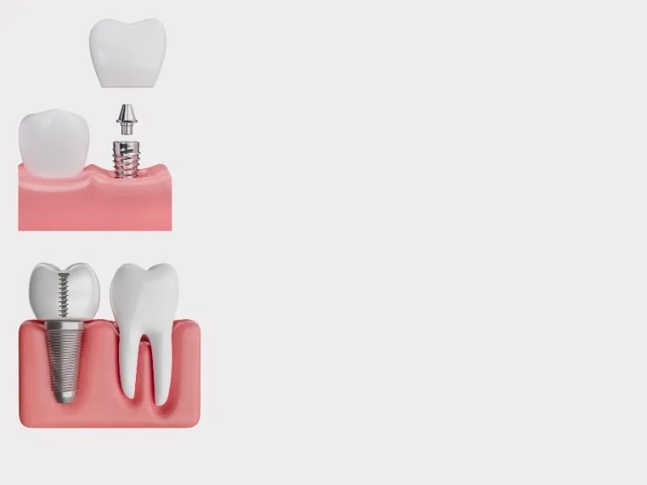

Implanty cementowaneImplanty cementowane (bez śruby) składają się z 3 części. Korona jest cementowana na łączniku.Implanty przykręcaneImplanty przykręcane składają się z 2 części. Korona jest mocowana do korzenia implantu śrubą.Czym są bezśrubowe implanty zębowe?
Bezśrubowy implant zębowy, nazywany też implantem typu press-fit lub friction-fit, to konstrukcja implantu, w której łącznik nie wymaga mocowania śrubą. Działa on na zasadzie bardzo ścisłego dopasowania – dzięki rozwiązaniom inżynieryjnym i precyzyjnym parametrom produkcji implant jest ciasno wciskany w łącznik. Różni się to od implantów przykręcanych, w których części implantu mocuje się za pomocą śrub. Do głównych zalet należą minimalne ryzyko poluzowania śruby i łatwy montaż. Ponadto dają one lepszy efekt estetyczny, ponieważ nie mają otworów na śrubę.
W tradycyjnym systemie implantów przykręcanych łącznik i korona są zwykle połączone ze sobą wewnętrznymi śrubami. Jednak w „bezśrubowych” lub cementowanych systemach implantów śruba w rzeczywistości nadal jest używana. Różnica dotyczy sposobu mocowania implantu i uzupełnienia protetycznego (korony). W tych tak zwanych metodach bezśrubowych w miejscach połączeń zamiast śrub stosuje się klej. Dzięki temu śruba nie jest widoczna z zewnątrz. W rezultacie określenie „bezśrubowy” może być mylące, ponieważ w tych systemach nadal stosuje się śruby, tyle że mocuje się je inną techniką.
Jak wszczepia się implant bezśrubowy?
Technika wszczepiania implantów bezśrubowych polega na przygotowaniu miejsca pod implant i stabilnym osadzeniu go w kości. Ponieważ implant i łącznik są wykonane tak, aby idealnie do siebie pasowały, śruby nie są potrzebne, jak w innych metodach leczenia implantologicznego. Klej stosuje się, aby wzmocnić połączenie implantu z uzupełnieniem lub zapewnić lepsze dopasowanie uzupełnienia. Szwy nie są potrzebne, ponieważ elementy zostają unieruchomione w trakcie zabiegu. Ponadto zabieg odbywa się podczas jednej wizyty, a gojenie jest szybsze, ponieważ nacina się mniej tkanek.
Dlaczego implanty zębowe są ważne?
Implanty zębowe mają bardzo istotne zalety, ponieważ służą do uzupełniania braków zębowych. Z tego powodu są bardzo często stosowane w stomatologii. Leczenie implantologiczne zapobiega pogarszaniu się struktury i zanikowi kości szczęki spowodowanym brakiem zębów. Dzięki wszystkim zaletom naturalnych zębów masz poczucie, jakbyś odzyskał własne zęby. Implanty są estetyczne i trwałe, a z nimi możesz bez obaw żuć, mówić i uśmiechać się w bardzo naturalny sposób. Utrzymują też pozycję pozostałych zębów i zapobiegają problemom wynikającym z ich przemieszczenia oraz innym powikłaniom stomatologicznym.
Implanty przykręcane a cementowane: jak działają?
Implanty zębowe są w stomatologii odtwórczej bardzo ważną alternatywą dla naturalnych zębów, ponieważ oferują wiele rozwiązań w zakresie funkcji i estetyki. Stosuje się dwa główne rodzaje implantów zębowych: przykręcane i cementowane. Poniższe zalety i wady poszczególnych zastosowań pomogą określić, do czego najlepiej nadaje się każdy z nich.
Implanty przykręcane
Implanty przykręcane to rodzaj implantów zębowych o cylindrycznej lub stożkowej budowie przypominającej śrubę z gwintem zewnętrznym. Wykonuje się je głównie z tytanu lub stopu tytanu, które charakteryzują się dobrą biokompatybilnością i dobrą zgodnością z tkanką kostną. Zabieg chirurgiczny polega na wykonaniu otworu w kości szczęki, a następnie wkręceniu implantu. Metoda ta zwiększa zdolność implantu do zakotwiczenia się w kości, ponieważ kość wrasta wokół niego. Implanty przykręcane są wybierane ze względu na przewidywalność efektów oraz odporność na obciążenia zgryzowe.
Zalety implantów przykręcanych
Wytrzymałość i trwałość: Implanty przykręcane wykonuje się ze stali nierdzewnej lub tytanu, dlatego są trwałe i mogą służyć przez wiele lat bez konieczności wymiany.
Wysoka skuteczność: Rodzaj zastosowanych implantów przykręcanych i użyty materiał wpływają na skuteczność uzupełnień protetycznych.
Minimalny zanik kości: Dobrze zintegrowane implanty przykręcane nie luzują się, dzięki czemu nie przyczyniają się do zaniku kości.
Osteointegracja: Implanty przykręcane wykazują dobrą stabilność pierwotną oraz dobrą osteointegrację, w której kość wrasta w powierzchnię implantu.
Wady implantów przykręcanych
Ograniczenia estetyczne: W porównaniu z innymi rodzajami implantów implant przykręcany nie jest dobrym wyborem w przypadku zębów przednich wymagających estetyki, ponieważ otwór na śrubę psuje wygląd.
Inwazyjny zabieg: Wszczepienie implantów przykręcanych to bardziej złożony proces, wymagający więcej zabiegów i dłuższego gojenia.
Implanty cementowane
Implanty cementowane, nazywane też implantami z koroną mocowaną na cement, to nowa generacja implantów, które nie wymagają przykręcania przy osadzaniu korony. Dlatego nie ma otworu na śrubę, dzięki czemu uzupełnienie wygląda bardziej naturalnie. Gładka lub lekko chropowata powierzchnia łącznika zapewnia mocniejsze połączenie. Rozwiązanie to jest estetycznie lepsze od implantów przykręcanych, ponieważ nie ma widocznych śrub ani otworów dostępowych. Nadają się do zębów przednich, gdzie widoczność i estetyka mają duże znaczenie.
Zalety implantów cementowanych
Estetyczny wygląd: Implanty cementowane zapewniają lepszą estetykę, ponieważ nie mają otworów dostępowych do śruby. Dzięki temu uzupełnienie wygląda bardziej naturalnie, zwłaszcza na zębach przednich.
Krótszy czas leczenia: Ponieważ zamiast przykręcania stosuje się cementowanie, leczenie trwa krócej niż w przypadku tradycyjnych implantów przykręcanych. Dzięki skróceniu czasu zabiegu proces jest dla pacjenta bardziej komfortowy.
Lepsze dopasowanie i wykończenie: Ponieważ nie ma otworu dostępowego do śruby, nie trzeba go zakrywać ani maskować. Dzięki temu uzyskuje się lepsze dopasowanie i wykończenie. Zmniejsza się też ryzyko przecieku bakteryjnego, który stanowi problem w przypadku implantów przykręcanych
Wady implantów cementowanych
Trwałość: Implanty cementowane są na ogół mniej trwałe niż implanty przykręcane i szybciej się zużywają, zwłaszcza tam, gdzie działają duże siły żucia.
Ograniczone możliwości naprawy: Naprawa jest też trudna, jeśli korona lub licówka ulegnie zniszczeniu, i w porównaniu z implantami przykręcanymi może wymagać wymiany całej korony.
Efektywność żucia: Nie zapewniają takiego komfortu i efektywności żucia jak implanty przykręcane, dlatego lepiej sprawdzają się w przypadku zębów przednich.
Trudności w utrzymaniu: Materiał wiążący, którym mocuje się uzupełnienia, utrudnia też czyszczenie i może prowadzić do infekcji, dlatego wymaga szczególnej dbałości o higienę jamy ustnej
Różnice między implantami przykręcanymi a cementowanymi: wybór odpowiedniego implantu
Przy wyborze rodzaju implantu – przykręcanego lub cementowanego – trzeba wziąć pod uwagę wiele czynników: położenie luki (tył lub przód jamy ustnej), gęstość kości, osobiste preferencje co do wyglądu i odczuć itd. Każdy rodzaj implantu ma swoje zalety i wady zależnie od sytuacji pacjenta, dlatego zaleca się konsultację ze stomatologiem.
Pod względem estetyki implanty cementowane sprawdzają się lepiej niż przykręcane. Stosuje się je raczej w przypadku zębów przednich niż trzonowych. Z klinicznego punktu widzenia implanty przykręcane są szczególnie preferowane w leczeniu zębów trzonowych w tylnej części jamy ustnej, które są szczególnie mocno obciążone. Ta cecha implantów przykręcanych pomaga zapobiegać niepowodzeniom implantów z powodu obciążeń mechanicznych. Implanty przykręcane służą dłużej niż implanty cementowane.
Implanty przykręcane nie wymagają materiału wiążącego. Pozwala to uniknąć różnych problemów z dziąsłami, takich jak zapalenie tkanek wokół implantu (periimplantitis), które może prowadzić do niepowodzenia uzupełnienia. W przypadku implantów cementowanych stosuje się klej. Jego nadmiar stwarza ryzyko zakażenia bakteryjnego wokół implantu, co może prowadzić do stanu zapalnego i zaniku kości. Ponadto mechanizm śrubowy ułatwia zdjęcie korony, a tym samym daje możliwość korekty lub naprawy implantu bez konieczności jego całkowitego usuwania. Jest to szczególnie przydatne przy rozwiązywaniu problemów, które w dłuższej perspektywie mogą dotyczyć korony, takich jak jej uszkodzenie czy poluzowanie.
Implanty cementowane stwarzają natomiast pewne problemy pod względem utrzymania i naprawy, ponieważ cementowanej korony nie można zdjąć i konieczna jest wymiana licówki lub korony. Jedną z wad implantów przykręcanych jest luzowanie się śrub, które wymaga stałej kontroli, nawet jeśli problem zostanie usunięty.
Po sprawdzone i niezawodne implanty zębowe – przyjedź do Turcji
Leczenie implantologiczne w Turcji to niezawodne i nastawione na bezpieczeństwo podejście zgodne z najwyższymi światowymi standardami. Zabiegi implantologiczne z wykorzystaniem zaawansowanej technologii i materiałów z międzynarodowymi certyfikatami podlegają ścisłym kontrolom i są skrupulatnie wykonywane przez specjalistów. Ponadto kliniki w Turcji oferują wysokiej jakości leczenie w przystępnych cenach, stawiając na zadowolenie pacjentów i trwałe rozwiązania. Oferowane są udane efekty, które możesz bezpiecznie wybrać, nie ryzykując zdrowia swoich zębów.